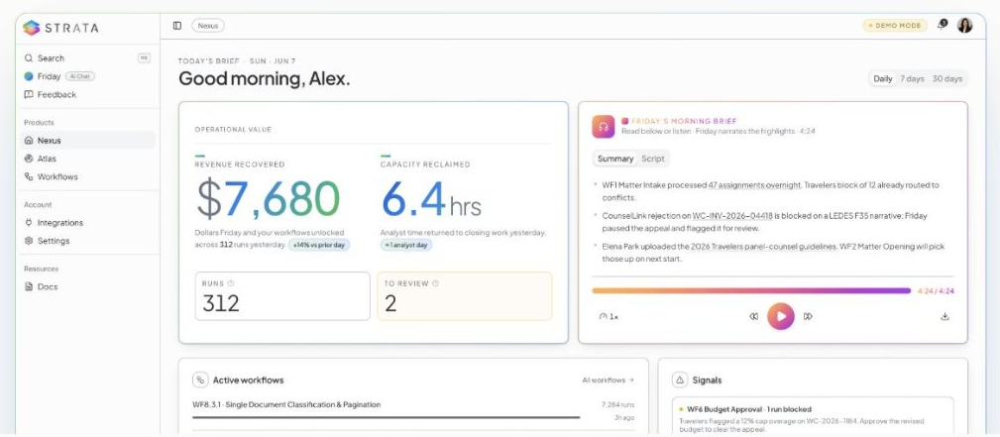
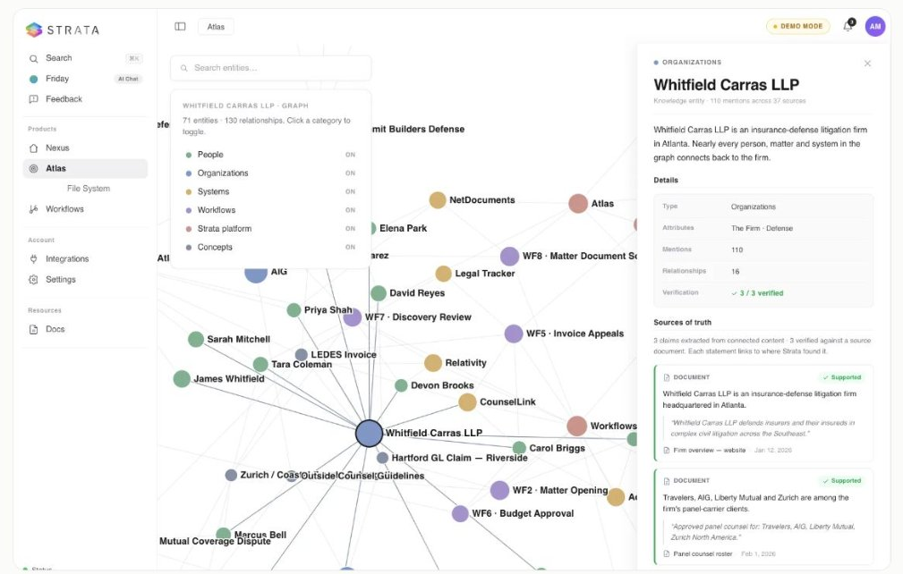

Strata Atlas
Where your firm’s operational map lives. Data sources connected, knowledge organized, ontology managed, workflows configured. The technical surface, operated by your innovation and IT teams alongside ours.
AI agents that run the operational work your firm doesn’t bill for. We turn it into recovered revenue and reclaimed capacity.

THE PLATFORM, BRIEFLY
Where your firm’s operational map lives. Data sources connected, knowledge organized, ontology managed, workflows configured. The technical surface, operated by your innovation and IT teams alongside ours.
The executive dashboard. Operational Value at the top: Time Saved, Revenue Recovered. Every workflow’s health, every integration’s status, and a Morning Brief in your inbox. Built for the CIO, CFO, COO and Managing Partner.
The design surface for new automations. Workflows get built here, by our team and your SMEs together, before they’re promoted into production.
The engine underneath. Every workflow runs on it. Every dashboard reads from it. Every integration flows through it. One foundation for the work.
Every workflow we run is a named automation with an owner and binary acceptance criteria.
We don’t lead with the AI. We lead with the numbers it moves.
OPERATIONAL VALUE
REVENUE RECOVERED
$428,610
Dollars collected that would have been written off. +18% MoM
CAPACITY RECLAIMED
1,284hrs
Hours returned to paralegals, billing, and intake. ≈ 12 FTE-weeks
FROM THE FIELD
13,000
INVOICES A MONTH, ONE CLIENT FIRM
That was the workload for one firm’s five-to-seven-person appeals team, and below the appeal threshold, the money got walked away from. Strata’s agents now analyze every line-item deduction and draft each appeal narrative for attorney review. Nothing is auto-submitted. The attorneys decide; the agents do the work that made deciding too expensive.
Invoice appeals is one named automation. The same platform runs billing follow-up, lateral onboarding, and trust accounting.
WORKFLOWS WE RUN
Strata operates underneath the billable work, not against it. The workflows on this page are clerical, operational, or administrative. You accept the work when it meets the bar.
The e-billing layer of your firm, run by agents: guideline compliance before an invoice goes out, deduction analysis when it comes back, and the portal work in between.
Every reduction analyzed against the invoice and the client’s guidelines. Every appeal narrative drafted for attorney review. Nothing is auto-submitted. The money you’ve been writing off, pursued at machine scale.
Proformas chased before they go stale, aged AR worked in 30, 60, and 90 day buckets, client-facing sends approved by a person. Every day of lock-up is working capital your partners are lending interest-free.
The unbilled drag between signing a lateral and their book billing here: conflicts questionnaires, client and matter transfers, timekeeper and billing setup, systems access. Weeks become days.
Three-way reconciliation on schedule instead of when someone finds time, unclaimed-funds aging, disbursement checks. The work that gets firms disciplined when it slips.
AR, AP, payroll support, records and document management. High-volume, rule-heavy, and exactly what agents are for.
STRATA ATLAS
The knowledge that runs your firm lives in people’s heads. Atlas puts it to work.

Atlas learns how your firm actually works.
Your knowledge, organized so an agent can act on it.
Agents run the work. Recovery reported every week.
Ask it anything. Correct what it misses. The map stays yours.
It’s not a black box. Watch it reason, follow the connections it draws, and correct what it gets wrong.
EDITABLE NODES
FEE WRITE-OFF APPROVAL
Write-offs over $5,000 route to the Managing Partner for sign-off.
Confirmed by your firm
CLIENT INTAKE GATE
Conflicts must clear and billing guidelines attach before a matter opens.
Confirmed by your firm
GOVERNANCE
Bring your security team to the first demo. What they’ll ask for is what we built first.
Every answer an agent gives carries claim-level citations back to source.
Human checkpoints are workflow steps. Your people decide; the run resumes the moment they respond.
The Library of Actions works the way your DBAs think: approved actions only, proper credentials, logged completely.
Model and tool choice is governed per step, not per vendor.
SINGLE SIGN-ON · ENCRYPTED CREDENTIALS AT REST · ISOLATION BETWEEN EVERY ACCOUNT · THE MAP ATLAS BUILDS STAYS YOURS
GET STARTED
Your firm has a write-off number. Let’s find it.
APPROVALS
Your team approves. Agents do the work.
AUDIT
Every run logged end to end.
SECURITY
SSO · encrypted credentials · account isolation